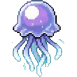

 Psychic
PsychicTap a stage to read its story.
Tentub is a delicate jellyfish with a glowing purple-blue bell and trailing translucent blue tendrils that drift behind it like ribbons of light. It floats just above the forest floor of the Light Grove, using gentle pulses of its bell to move through air rather than water - something the grove's magic seems to permit. Its bell lights pulse in a slow rhythm that others instinctively fall into step with, calming companions and giving them a fraction more courage than they came with. The guardians of the grove sometimes train alongside a Tentub to center themselves before trials.
Field note: Trainers standing near a Tentub during practice sessions consistently make fewer errors and score better on follow-up quizzes.
Light Grove. Tentub and its family are found in the Light Grove. See everyone who lives there.
Share a Bond Food that matches its types to become friends. Tentub loves:
A Bond Food is not a trick. It joins your spirit with the Kimuro's spirit, and only when it chooses you.
Print the Kimuro adventure packs: mazes, cards, a board game and Bond Mark medals.
See the printable packs